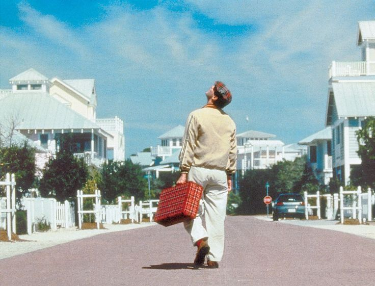
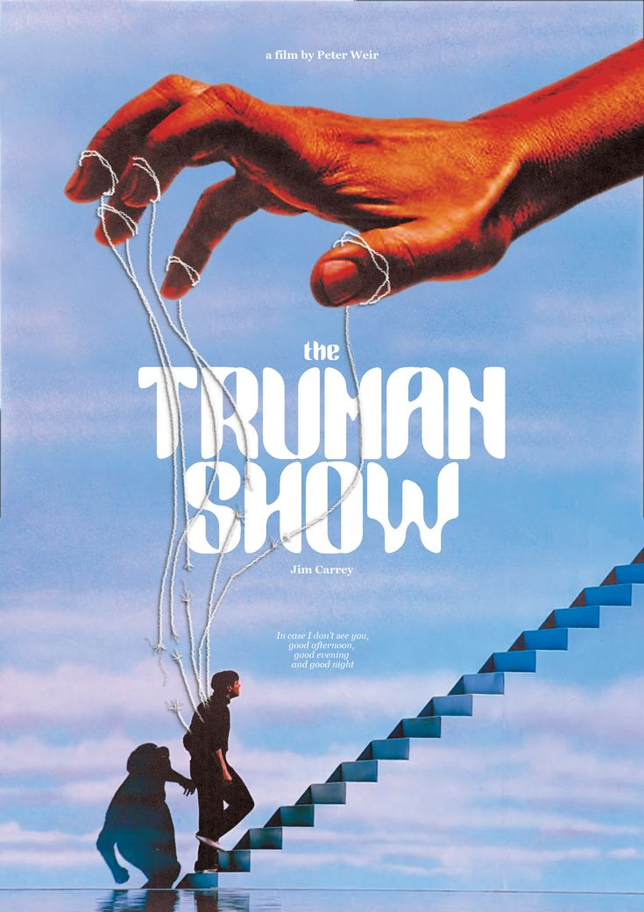

Comedy, Drama, Science Fiction
1998
103 minutes
Peter Weir
The Truman Show follows Truman Burbank, who unknowingly lives his entire life inside a massive television set where every moment is broadcast to millions around the world. As strange events begin to expose the truth, Truman embarks on a journey to discover reality and reclaim his freedom.